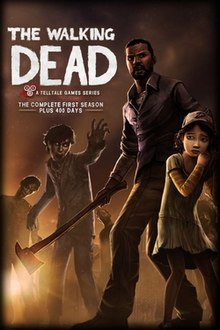

Silent Hill 2 (2001) IMBd Rating: 9.4/10 ING Rating: 9/10 A survival horror game that focuses on psychological scares in which James returns to the errie town, Silent hill, after receiving a letter from his dead wife. PLATFORMS:
PlayStation 2, PlayStation 3, Nintendo Switch, Xbox, Xbox 360, and Microsoft Windows
Life is Strange (2015) IMDb Rating: 8.9/10 ING Rating: N/A A five part episodic game that sets out a story based choice and consequence game by allowing the player to rewind time and affect the past, present, and future. An awkward photographer student named Max discovers her ability to rewind time, and reunited with her estranged best friend Chole to investigate the mysterious disapearance of a local girl. PLATFORMS: PlayStaion 4, Xbox One, Xbox series X and series S, Nintendo Switch, PlayStation 5, macOS, and Microsoft Windows
God Of War (2018) IMBd Rating: 9.6/10 ING Rating: 10/10 After wiping out the gods of Mount Olympus, Kratos moves on to the frigid lands of Scandinavia, where he and his son must embark on an odyessy accross a dangerous world of gods and monsters to achieve the goal of placing the wife and mom of Kratos and Antreus ashes at the highest peak. PLATFORMS: PlayStation 4 and Microsoft Windows
Firewatch (2016) IMBd Rating: 8.2/10 ING Rating: 9.3/10 Set in the Wyoming wilderness, where your only emotional lifeline is the person on the other end of a handheld radio. The story takes place in 1989, Henry takes a volunteer fire lookout job in the Wyoming wilderness to escape from his troubled past only to be thrown into plethora of paranoia and mystery. PLATFORMS: PlayStation 4, Nintendo Switch, Xbox one, macOS, Steam, and Microsoft Windows
Undertale (2015) IMBd Rating: 8.8/10 ING Rating: 10/10 A taditional role-playing game where no one has to get hurt. Enter the underworld, a massive subterranean cave where monsters, who once lived harmoniously with humans on the surface, now have been banished after losing a war with humanity. PLATFORMS: PlayStation 4, Xbox one, Nintendo Switch, Macintosh operating systems, and Microsoft Windows
Uncharted 4: A Thief's End (2016) IMBd Rating: 9.5/10 ING Rating: 9/10 A third-person adventure series. Thrown back into the dangerous underworld he'd tried to leave behind, Nathan Drake must decide what he's willing to sacrifice to save the ones he loves. PLATFORMS: PlayStation 4 and Microsoft Windows

The Walking Dead (2012) IMBd Rating: 9.2/10 ING Rating: 9.3/10 Based on "The Walking Dead" television series, the living will have to survive amongst the dead. The story follows world devestated by the undead, a convicted criminal is given a second chance at life when he comes across a little girl named Clementine. PLATFORMS: PlayStation 4, PlayStation 3, Xbox one, Xbox 360, Nintendo Switch, and Microsoft Windows
Detroit: Become Humann (2018) IMBd Rating: 9.2/10 ING Rating: 8/10 The site of a new industrial revolution, a game about life -- human life, artificial life, and everything in between. Take control of three andriods in their quest to discover who they really are. PLATFORMS: PlayStation 4 and Microsoft Windows
Ghost of Tsushima (2020) IMBd Rating: 9.2/10 ING Rating: 9/10 A sprawling open-world samurai game set in Fuedal Japan. In 1274 on the Tsushima Iland, the last samurai, Jin Sakai, must master a new fighting style, the way of the Ghost, to defeat the Mongol forces and fight for the freedom and independence of Japan. PLATFORMS: PlayStation 4 and PlayStation 5
Horizon Zero Dawn (2017) IMBd Rating: 9.1/10 ING Rating: 9.3/10 An exhilarating action role playing game, set in primitave tribal world where strange, monstrous, animalistic machines roam the wilderness, a brave young female warrior goes on a quest to learn the truth about her mysterious orgin and the state the world is in. PLATFORMS: PlayStation 4 and Microsoft Windows
The Last Of Us Part II (2020) IMBd Rating: 8.5/10 ING Rating: 10/10 A sequel to the hit action-adventure "The Last Of Us", five years after the events of part one, Ellie embarks on another journey through a post-apocalyptic America on a mission of vengence against a mysterious militia. PLATFORMS: PlayStation 4
Red Dead Redemption (2010) IMBd Rating: 9.5/10 ING Rating: 9.7/10 A Western Epic set at the turn of the 20th Century when the lawless and chaotic badlands begin to give way to the expanding reach of government and the spread of the industrial age. A formal outlaw is forced by the federal government to hunt down the members of his old gang. PLATFORMS: PlayStation 3, Xbox one, and Xbox 360
Spider-Man (2018) IMBd Rating: 9.2/10 ING Rating: 8.7/10 Features the acrobatic abilities, inprovisation and web-slinging while also introducing never-seen-before elements in a Spider-Man game. When a new villian threatens New York City, Peter Parker and Spider-Man's world collide. To save the city nd those he loves, he must rise up and be greater. PLATFORMS: PlayStation 4 and PlayStation 5
Red Dead Redemption II (2018) IMBd Rating: 9.7/10 ING Rating: 10/10 An epic tale of life in America's unforgiving heartland, the game's vast and atmospheric world also provides the foundation for a brand new online multiplayer experience. Admist the decline of the Wild West the turn of the 20th Century, outlaw Arther Morgan and his gang struggle to cope with the loss of their way of life. PLATFORMS: PlayStation 4, Xbox one, Google Stadia, and Microsoft Windows
Spider-Man Miles Morales (2020) IMBd Rating: 8.5/10 ING Rating: 9/10 A sequel to "Spider-Man", you can play as Miles Morales as a new and different spider-man while he learns some stories about his will of fighting crime and serving justice by his mentor and former hero, Peter-Parker. PLATFORMS: PlayStation 4 and PlayStaion 5
Little Misfortune (2019) IMBd Rating: 7.5/10 ING Rating: N/A An interactive story focuses on exploration and characters, both sweet and dark. This dark fantasy adventure game focuses on an imaginative 8-year-old girl who seeks the prize of Eternal Happiness, as a gift to her Mommy. PLATFORMS: PlayStation 4, Nintendo Switch, Xbox one, macOS, Macintosh operating systems, and Microsoft Windows
Sifu (2022) IMBd Rating: 8.0/10 ING Rating: 9/10 A third-person action game featuring intense hand-to-hand combat, where you are in control of a young Kung-Fu student on his path of revenge throughout the city. PLATFORMS: PlayStation 4, PlayStation 5, and Microsoft Windows
Twelve Minutes (2021) IMBd Rating: 7.0/10 ING Rating: 8/10 An interactive narrative that blends dream-like suspense with claustrophobia and a fragmented structure of time. What should be a romantic evening with your wife turns into a nightmare when a police detective breaks into your home, accuses your wife of murder and beats you to death. PLATFORMS: PlayStation 4, PlayStation 5, Nintendo Switch, Xbox one, Xbox Series X and Series S, and Microsoft Windows